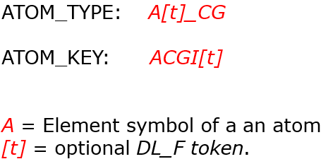

The DL_F Notation 2¶
This page briefly describes DL_F Notation features, the notation syntax and shows some examples. For more details please consult the manual and the reference.
C.W. Yong, J. Chem. Inf. Model. 56, 1405-1409 (2016)
Features
The DL_F Notation general formats are as follows:
{kind=link}
The ATOM_TYPEs are determined via molecular topology analysis. The ATOM_TYPEs are listed in a file called the dlf_notation.output in the output/ directory.
There is no need to keep track of the ATOM_KEYs in the library files. The ATOM_KEYs can be generated in-situ in DL_FIELD, based on the ATOM_TYPEs.
The optional tokens are some alphabets and symbols that indicate the types and positions of atoms within a CG. For instance, the ethanol molecule in the previous page contained the tokens p and s, which refers to primary and secondary carbon atoms, respectively.
Other more common tokens are E and L, which refer to end and linked position, respectively.
The latest DL_FIELD version (4.10) can detect about four hundred CGs. More will be added when new versions are released.
In summary, DL_F Notation has the following features:
- Expression of standard atom types with a consistent format for a range of FF schemes.
- Use of the universal atom typing procedures within DL_FIELD.
- Produce DL_POLY files with consistent ATOM_KEYs for more precise and ease of results analysis.
- Easy to identify, with sensible format of naming atoms that indicates precisely its chemical nature.
- Use of xyz input configuration file format with full automatic determination of ATOM_TYPEs.
Example structures
- A pyridine molecule. The tokens -1, -2, etc, are the numering sequence that is usually used in aromatic ring systems.
{kind=link}
- Assignments of ATOM_TYPEs in DL_F Notation and PCFF force field for favipiravir molecule, an antivirial medication.
{kind=link}
- Illustration of using xyz as the input structure in DL_FIELD, to produce the ATOM_TYPEs. Then, the corresponding FIELD file was produced, with the atom labels showed in the standard OPLS FF notation.
{kind=link}
- Another similar example to the one above but the FIELD file shows the atom labels expressed in the standard notation for PCFF force field.
{kind=link}
- Finally, example below shows ATOM_TYPEs for dynemicin A, a drug molecule. The corresponding ATOM_KEYs are shown in blue. These ATOM_KEYs are similar irrespective of which FF schemes are used: OPLS2005, CVFF or PCFF but the potential parameters are different.
{kind=link}
Can you tell which atoms are located in which parts of the molecule?